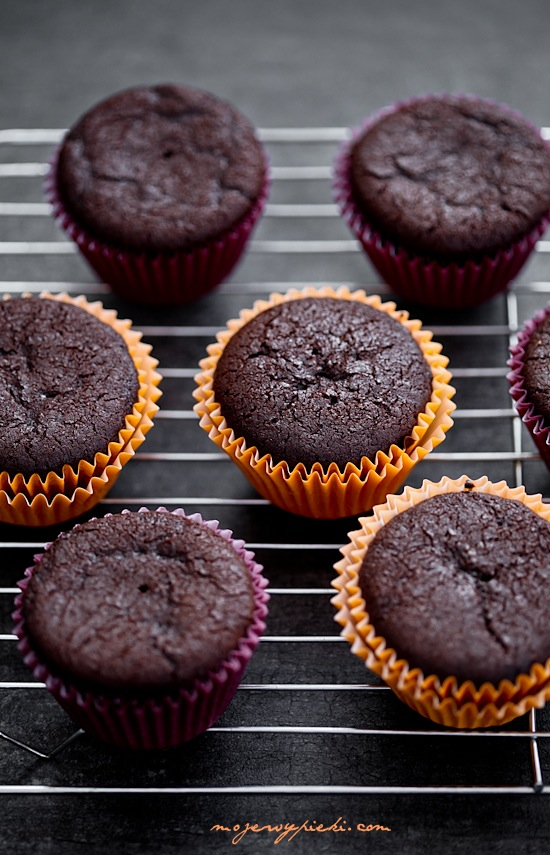
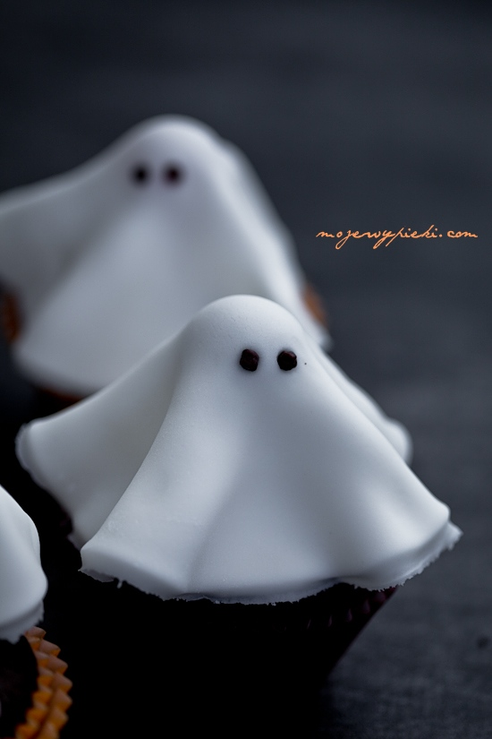

Babeczki duchy

Składniki na około 12 babeczek:

- 50 g gorzkiej czekolady
- pół szklanki kakao
- 2 łyżeczki kawy rozpuszczalnej
- 1 szklanka mleka
- 2 duże jajka
- 1 szklanka + 2 łyżki mąki pszennej
- 3/4 łyżeczki sody oczyszczonej
- 3/4 szklanki jasnego brązowego cukru
- pół szklanki oleju rzepakowego
- 1 łyżeczka ekstraktu z wanilii
Przepis na babeczki:
- Mąkę przesiać z sodą oczyszczoną, odłożyć.
- Do garnuszka wlać mleko, dodać czekoladę połamaną na kosteczki, kakao, kawę.
Podgrzewać, do momentu rozpuszczenia się składników, mieszając.
Odstawić do przestudzenia. - W większym naczyniu wymieszać przestudzoną mieszankę,
olej, cukier, roztrzepane rózgą kuchenną jajka, ekstrakt z wanilii.
Dodać przesianą mąkę z sodą, wymieszać delikatnie szpatułką do połączenia. - Formę do muffinek wyłożyć papilotkami. Rozdzielić pomiędzy nie ciasto,
wypełniając babeczki do 3/4 ich wysokości. - Piec w temperaturze 170ºC przez około 30 – 35 minut lub do tzw. suchego patyczka.
Wyjąć, wystudzić na kratce.

Dodatkowe składniki:
- okrągłe lizaki np. Chupa Chups
- plastyczna biała masa cukrowa
- drobniutka posypka czekoladowa na oczka
- Wystudzone babeczki ułożyć na paterze. W środek każdej babeczki wbić lizaka (bez folii).
- Z masy cukrowej wyciąć duże kółka o średnicy około 12 cm
(najłatwiej odrysowane od miseczki, talerzyka) i ułożyć jako szatę duszka na lizakach.
Aby masa się nie kleiła
przy wałkowaniu należy delikatnie oprószyć stolnicę i wałek cukrem pudrem.
Z posypki cukrowej zrobić oczka.